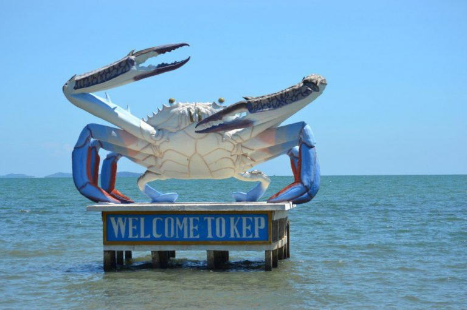

ការពិពណ៏នាអំពី ខេត្តនីមួយៗនៅក្នងប្រទេសកម្ពុជា
ទំព័រដើម
តាកែវ
ភ្នំពេញ
កែប
ព្រះសីហនុ
ស្វាយរៀង
កំពង់ធំ
បាត់ដំបង
ពោធ៏សាត់
សៀមរាប
រតនគីរី
មណ្ឌលគីរី
ក្រចេះ
ត្បូងឃ្មុំ
កំពង់ចាម
ព្រៃវែង
កណ្តាល
ឧត្តរមានជ័យ
កំពង់ឆ្នាំង
កំពង់ស្ពឺ
បន្ទាយមានជ័យ
កោះកុង
ប៉ៃលិន
កំពត
ស្ទឹងត្រែង
ព្រះវិហារ
ទំនាក់ទំនង
ខេត្តកែប

ព័ត៌មានសង្ខេបអំពីខេត្តកែប
> ខេត្តកែប គឺជាខេត្តតូចជាងគេបំផុតក្នុងប្រទេសកម្ពុជា ដែលមានផ្ទៃក្រឡាចំនួន ៣៣៦គីឡូម៉ែត្រការ៉េ (១៣០ម៉ាញ៍) ដែលមានប្រជាជនចំនួន ៤១ ៧៩៨។ ជាខេត្តមួយក្នុងចំណោមខេត្តថ្មីបំផុតរបស់កម្ពុជា រួមជាមួយនឹងខេត្តប៉ៃលិន ខេត្តព្រះសីហនុ និងខេត្តត្បូងឃ្មុំ ដែលបង្កើតឡើងដោយព្រះរាជក្រឹត្យចុះថ្ងៃទី២២ ខែធ្នូ ឆ្នាំ២០០៨ ដែលបានបំបែកក្រុងកែប និងស្រុកដំណាក់ចង្អើរចេញពីខេត្តកំពត ក៏ដូចជាការកែសម្រួលព្រំប្រទល់ខេត្តមួយចំនួនផងដែរ។ ខេត្តកែបជាខេត្តតូចជាងគេ និងមានប្រជាជនរស់នៅតិចជាងគេបំផុតរបស់កម្ពុជា។ ទីរួមខេត្តគឺក្រុងកែប ហើយខេត្តនេះមានឧទ្យានជាតិកែបថែមទៀតផង។
> ខេត្តកែបគឺជាខេត្តមួយដ៏តូចបំផុតរបស់ប្រទេសកម្ពុជា [២] ដែលគ្របដណ្ដប់ផ្ទៃដីប្រមាណ 336 km2 (130 sq mi) និងមានប្រជាជនចំនួន ៤០ ២៨០ នាក់។ [១] វាគឺជាខេត្តមួយក្នុងចំណោមខេត្តថ្មីៗបំផុតនៃកម្ពុជា រួមជាមួយ ប៉ៃលិន ព្រះសីហនុ និង ត្បូងឃ្មុំ ដែលត្រូវបានបង្កើតឡើងតាមរាជក្រឹត្យថ្ងៃ ២២ ធ្នូ ២០០៨ ត្រូវបានបំបែកចេញពីខេត្តកំពត ស្របនឹងការសម្របសម្រួលព្រំសីមាខេត្តជាច្រើន។[៣][ត្រូវការអំណះអំណាង] ទីរួមខេត្តគឺក្រុងកែប ហើយក៏មានឧទ្យានជាតិមួយដែរ ដែលគេហៅថាឧទ្យានជាតិកែប។ ខេត្តកែបជាខេត្តមួយក្នុងចំណោមខេត្តទាំង៤ដែលស្ថិតនៅតាមឆ្នេរសមុទ្រភាគនិរតីនៃប្រទេស[១]កម្ពុជា។ ខេត្តកែបស្ថិតនៅមិនប៉ុន្មានសហាតិមាត្រពីព្រំដែនកម្ពុជា-វៀតណាមឡើយ។ ក្រុងកែបធ្លាប់ជាទីក្រុងឆ្នេរសមុទ្រដ៏ពេញនិយមរបស់កម្ពុជា។ ឆ្នេរសមុទ្រនៅក្រុងកែបជាឆ្នេរព្រៃកោងកាង និង គ្រួសខ្មៅៗ ។ក្រុងកែបសំបូរគ្រឿងសមុទ្រថោកៗតែឆ្ងាញ់ ជាពិសេសគឺ ក្ដាមសមុទ្រ។ ខេត្តកែបក៍មាននូវផលិតផលជាច្រើនផងដែរដូចជា ម្រេច អំបិល ផ្លែឈើ ធុរ៉េន ស្វាយ ដូង សាវម៉ាវ ហើយនិងមានតំបន់ទេសចរណ៏ ជាច្រើនដូចជា ឆ្នេរសមុទ្រ ភ្នំ កោះ រូងភ្នំ និងរមណីយដ្ឋានជាច្រើន ។ ជាពិសេសក៍មានសណ្ឋាគារសម្រាប់ ភ្ញៀវទេសចរណ៍ជាតិ និង អន្តរជាតិសម្រាប់ស្នាក់នៅទីនោះផងដែរ។ ទឹកដីកែបហ៊ុំព័ទ្ធទាំងស្រុងដោយ[៤]ខេត្តកំពត លើកលែងតែឆ្នេរសមុទ្រ ១៦ គ.ម. ចេញ នៅខាងត្បូងជាប់ព្រំប្រទល់ឈូងសមុទ្រថៃ និង កោះភូគុក (កោះត្រល់) នៃវៀតណាម។ ព្រំខេត្តខាងលិចមានចម្ងាយ ២០ គ.ម. ពីក្រុងកំពត។ ព្រំខេត្តខាងកើតមានចម្ងាយប្រហែល ២០ គីឡូម៉ែត្រពីព្រំដែនវៀតណាម។
> ខេត្តកែប មានតែ ស្រុក១ប៉ុណ្ណោះ គឺ:
- ស្រុកកែប